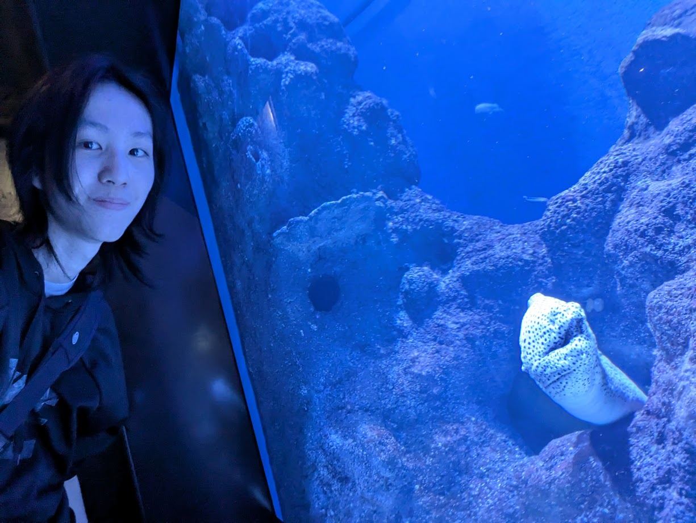

Building more inclusive solutions.
Dive In
I design and develop solutions by putting users first, prioritising clarity, usability, and real-world application.
Through the various projects I've worked on, I continuously explore new technologies and refine my skills to broaden the tools available to me.
I enjoy shaping ideas into real products, building solutions with clarity, usability, and thoughtful implementation in mind.